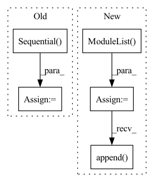

Pattern ID :1786
Before Change
self.alibi = AlibiPositionalBias(heads = heads)
self.to_q = nn.Sequential(
nn.Conv1d(dim, inner_dim, 1, bias = False),
nn.Conv1d(inner_dim, inner_dim, 3, bias = False, groups = inner_dim)
)
self.to_k = nn.Sequential(
nn.Conv1d(dim, inner_dim, 1, bias = False),
nn.Conv1d(inner_dim, inner_dim, 3, bias = False, groups = inner_dim)After Change
self.qkv_ds_convs = nn.ModuleList([])
for _ in range(3): // for queries, keys, values
ds_convs = nn.ModuleList( [])
for kernel_size in ds_conv_kernel_sizes:
if kernel_size == 0:
ds_convs.append( nn.Identity())
continue
ds_convs.append(CausalDepthwiseConv1d(inner_dim, kernel_size))
In pattern: SUPERPATTERN
Frequency: 3
Non-data size: 5
Instances Fragment ID: 3151637
Project Name: lucidrains/tranception-pytorch
Commit Name: b2eaf893294394093839a66effb621645d54cd6c
Time: 2022-06-12
Author: lucidrains@gmail.com
File Name: tranception_pytorch/tranception_pytorch.py
Class Name: CausalAttention
Method Name: __init__
Parent Class: nn.Module
Fragment ID: 3151640
Project Name: wwmark/meshgraphnets
Commit Name: 2e65d2b0e36033a5a2a0ddcb73d7601635f223ba
Time: 2021-11-21
Author: ruoheng.ma@gmail.com
File Name: encode_process_decode.py
Class Name: Processor
Method Name: __init__
Parent Class: nn.Module
Fragment ID: 3151641
Project Name: wwmark/meshgraphnets
Commit Name: e4e3108cc75391e9ec27d848ef92f94334e0915b
Time: 2021-11-07
Author: ruoheng.ma@gmail.com
File Name: encode_process_decode_ripple.py
Class Name: Processor
Method Name: __init__
Parent Class: nn.Module